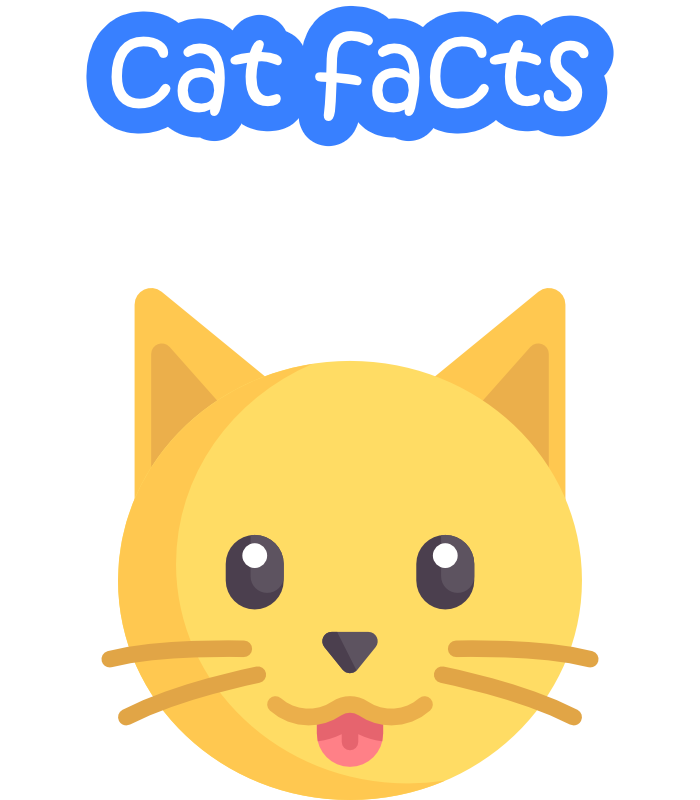

<ion-content [fullscreen]="true">
    <div>
        
    </div>
    <div>
        <ion-button class="buttons" color="primary" fill="outline" expand="block"
                    (click)="navigateToCreateCatfact()">New
            Cat Fact
        </ion-button>
    </div>
    <ion-button class="buttons" color="primary" fill="outline" expand="block"
                (click)="navigateTolistCatfacts()">My Cat Facts
    </ion-button>
</ion-content>
